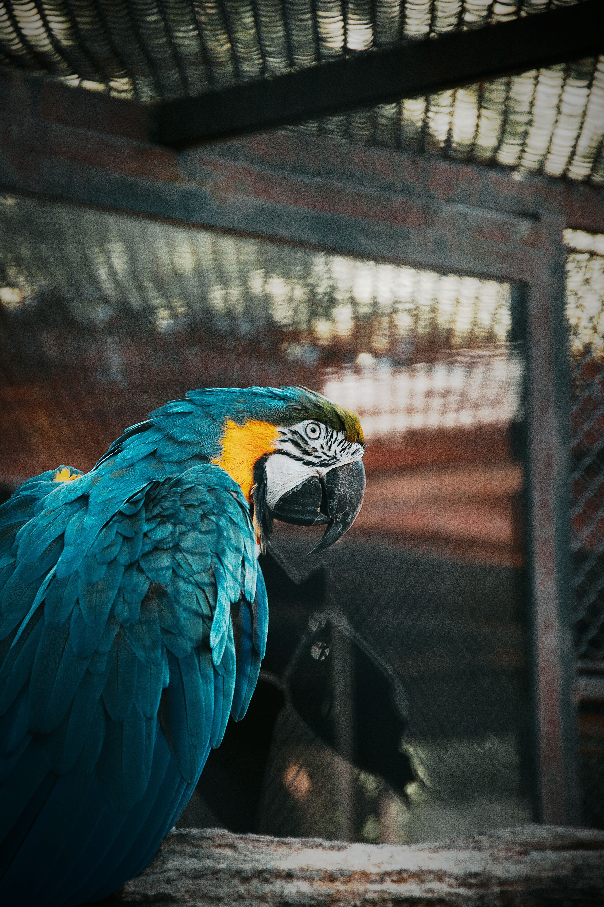
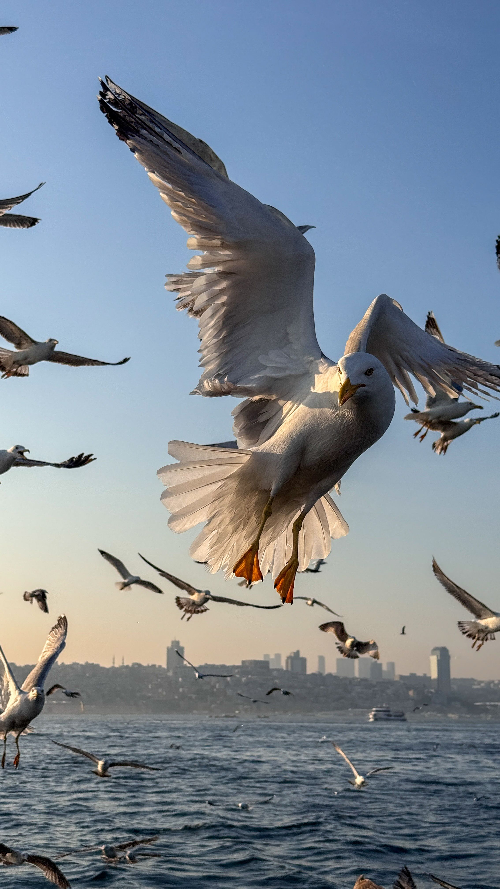
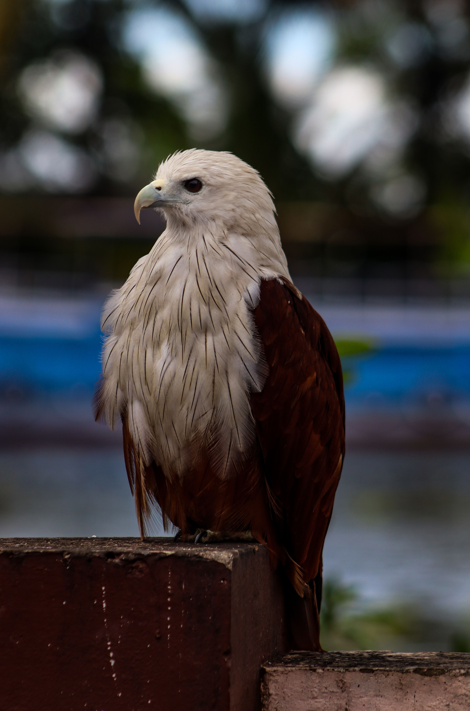
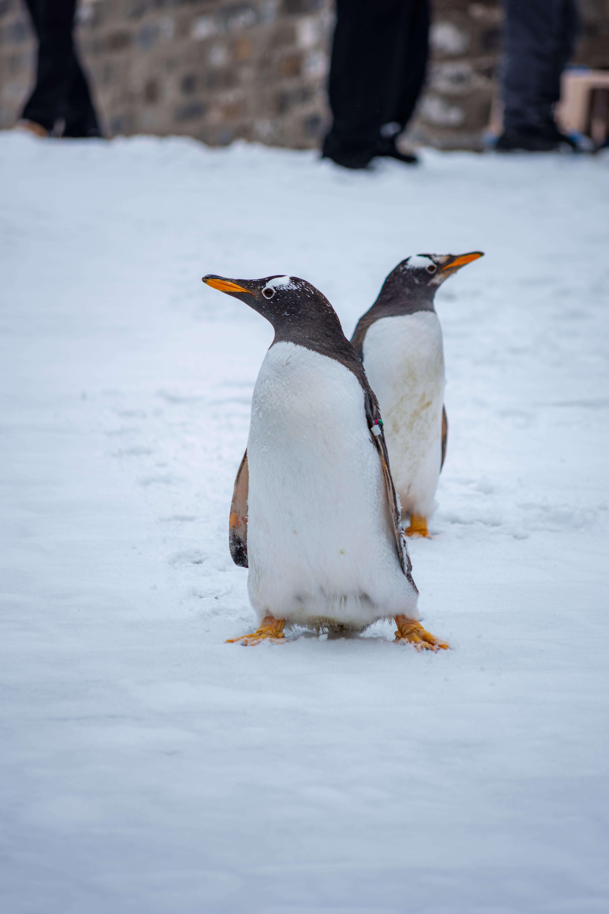
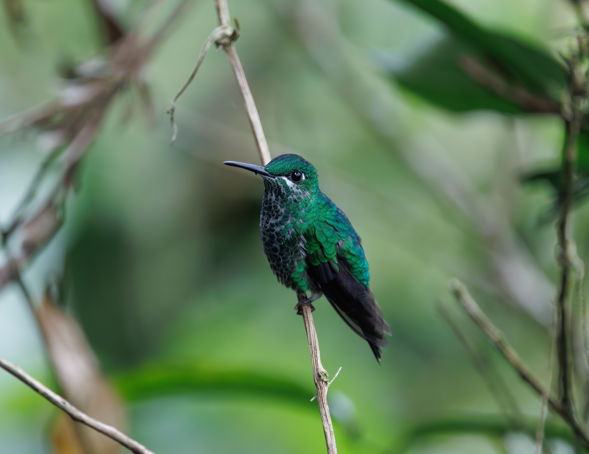
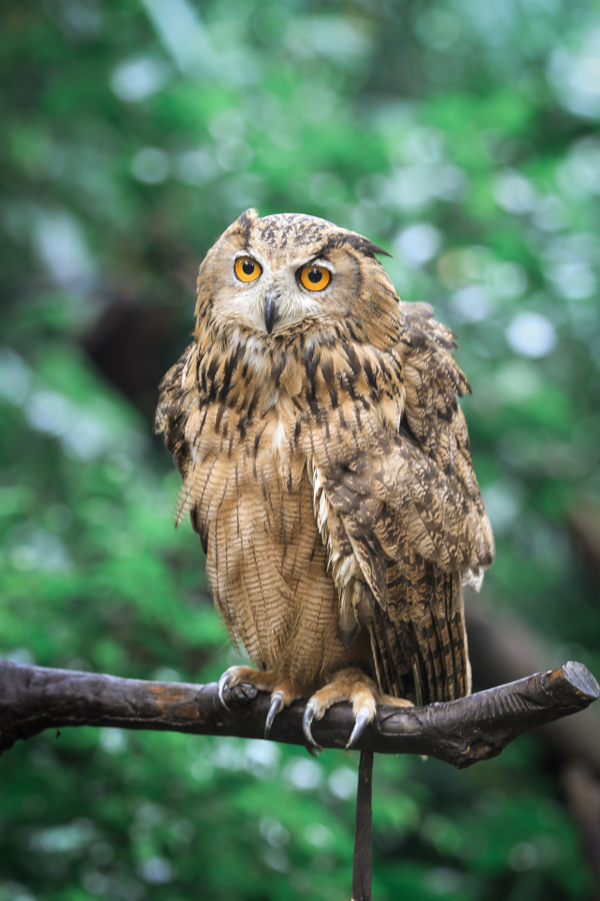
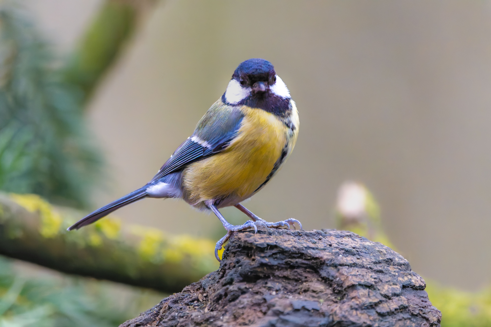

What are Birds?
Birds belong to the class Aves, characterized by feathers, toothless beaks, the laying of hard-shelled eggs, a high metabolic rate, and a four-chambered heart. They are warm-blooded vertebrates found across every continent.
From towering flightless ratites to tiny hummingbirds, avian species represent a stunning branch of evolutionary history linked directly to ancient dinosaurs.
Key Characteristics
1. Specialized Feathers: Feathers provide lightweight aerodynamic power for flight, crucial thermal insulation against cold climates, and brilliant visual displays for mating.
2. Hollow Pneumatic Bones: Most birds possess hollow, interconnected skeletal structures that significantly reduce body weight to make airborne travel efficient.
3. Specialized Beaks: Lacking teeth, birds have evolved diverse bill shapes tailored precisely to their ecological diets, from seed cracking to fish catching.

Meet the Birds
While thousands of unique avian species inhabit the biosphere, here are four iconic representatives.

Bald Eagle
A powerful raptor with sharp eyesight, serving as an apex hunter across North American lakes and rivers.

Emperor Penguin
A flightless seabird specialized for life in the freezing Antarctic, swimming expertly through icy depths.

Hummingbird
A tiny marvel capable of hovering in place and flying backward by beating its wings at incredible speeds.

Barn Owl
A nocturnal hunter possessing acute hearing and silent flight feathers for tracking hidden prey at night.

Where Do Birds Live?
Birds are among the most mobile creatures on Earth. Their capacity for flight enables them to cross oceans, scale highest peaks, and endure harsh polar winters via seasonal migration.
What Do Birds Eat?
Avian dietary preferences vary extensively based on species classification and beak morphology.
Granivores & Frugivores
Finches, parrots, and doves feed on seeds, grains, and fruits, playing a vital ecological role in pollination and forest seed dispersal.
Carnivores & Piscivores
Eagles, hawks, and pelicans hunt fish, small mammals, and reptiles using sharp talons and acute visual targeting.
Insectivores & Omnivores
Swallows, robins, and crows consume insects, worms, and varied matter, helping naturally control pest populations.
💡 Did You Know?
The Arctic Tern undertakes the longest migration of any animal, flying nearly 44,000 miles round trip every year!
Woodpeckers can peck wood up to 20 times per second, utilizing built-in skull shock absorbers to protect their brains.
Ostriches have eyes that are bigger than their entire brains, providing exceptional visual awareness against predators.
Quick Facts
10,000+
Recognized bird species worldwide
Global
Inhabiting every ecosystem on Earth
Flight & Ground
Aerial, aquatic swimming, and walking